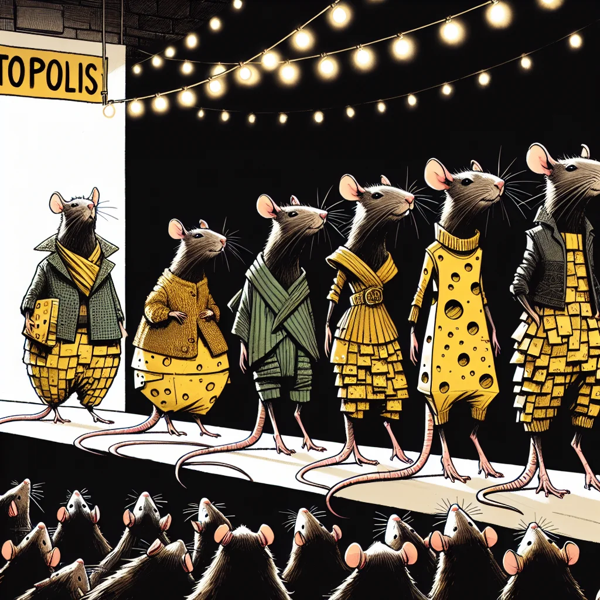

{kind=link}
{kind=link}
Beyond the Stitches: The Emerging Fashion of Recycled Urban Threads
Sustainability is stitching its way into Ratopolis' heart as innovative designers transform urban waste into stylish and eco-friendly ratwear, blending high fashion with environmental consciousness to create a trend that’s more than just threads.
3 minute read

In recent months, Ratopolis has seen a surge in fashion created from recycled materials found in its bustling urban landscape. This trend is not only capturing the imagination of fashion enthusiasts but also resonating deeply with environmentally aware citizens. By turning discarded items into fashionable attire, these designers are promoting sustainability and minimizing waste in the community.
"The creativity on display is phenomenal. It’s amazing to see how trash can be turned into treasure," says Remy Tailor, a local fashion enthusiast. "These designs are not just stylish but make a statement for our future."
Leading this movement are visionary designers like Squeaky Seamstress and Cheddar Chic, who have made it their mission to craft eye-catching outfits from seemingly worthless materials. Using old cheese wrappers, bottle caps, and even newspaper, they are redefining what ratwear can be.
"The possibilities are endless," remarks Squeaky Seamstress. "Every piece tells a unique story, and it’s gratifying to see rats embracing this change."
The environmental benefits of this trend are significant. By utilizing recycled materials, fashion designers are helping to reduce the waste and pollution that often plagues Ratopolis. This shift not only makes the city cleaner but also elevates the moral fabric of the community.
"It feels good to know that what I wear helps the environment," says Minnie Whiskers, a Cheese District resident. "I never thought I'd be wearing something made from old newspapers, but it's surprisingly chic!"
However, this movement isn’t without its challenges. Designers often struggle with sourcing and processing suitable materials. The labor-intensive nature of creating fashion from recyclables can also be a drawback.
"Getting the materials in usable condition requires effort and creativity," admits Cheddar Chic. "But the end result is worth it."
Despite these hurdles, the potential for growth in this industry is immense. The burgeoning recycled ratwear market holds promise for more innovation and job creation within the community. The success of these designs could inspire widespread adoption of sustainable practices, leading to a more eco-friendly Ratopolis.
"This trend is a win-win," agrees Squeaky Clean, an eco-activist. "We get to look good and feel good about helping the environment."
But not everyone is convinced. Some argue that the focus on recycled fashion could divert attention from other pressing environmental issues, like pollution control and habitat preservation. Others question whether recycled materials can truly compete with traditional fabrics in terms of durability and comfort.
"Recycled fashion is great, but it shouldn’t be the only solution we pursue," cautions Ratopolis University environmental science professor, Dr. Nibbles.
As this trend continues to grow, it's clear that the future of ratwear lies in sustainability. Upcoming events and showcases are expected to highlight these recycled creations, inspiring more designers and consumers to join the movement.
In conclusion, the rise of recycled urban threads in Ratopolis signifies more than a fashion statement. It is a call to action for all rats to consider their environmental impact and make sustainable choices. By supporting this trend, we can all contribute to a cleaner, more stylish future for our city. Recycle, repurpose, and strut your stuff with pride—Ratopolis is watching.
Looking for more in-depth news and exclusive content? Follow RAT TV for real-time updates, behind-the-scenes insights and the latest breaking news.
"The creativity on display is phenomenal. It’s amazing to see how trash can be turned into treasure," says Remy Tailor, a local fashion enthusiast. "These designs are not just stylish but make a statement for our future."
Leading this movement are visionary designers like Squeaky Seamstress and Cheddar Chic, who have made it their mission to craft eye-catching outfits from seemingly worthless materials. Using old cheese wrappers, bottle caps, and even newspaper, they are redefining what ratwear can be.
"The possibilities are endless," remarks Squeaky Seamstress. "Every piece tells a unique story, and it’s gratifying to see rats embracing this change."
The environmental benefits of this trend are significant. By utilizing recycled materials, fashion designers are helping to reduce the waste and pollution that often plagues Ratopolis. This shift not only makes the city cleaner but also elevates the moral fabric of the community.
"It feels good to know that what I wear helps the environment," says Minnie Whiskers, a Cheese District resident. "I never thought I'd be wearing something made from old newspapers, but it's surprisingly chic!"
However, this movement isn’t without its challenges. Designers often struggle with sourcing and processing suitable materials. The labor-intensive nature of creating fashion from recyclables can also be a drawback.
"Getting the materials in usable condition requires effort and creativity," admits Cheddar Chic. "But the end result is worth it."
Despite these hurdles, the potential for growth in this industry is immense. The burgeoning recycled ratwear market holds promise for more innovation and job creation within the community. The success of these designs could inspire widespread adoption of sustainable practices, leading to a more eco-friendly Ratopolis.
"This trend is a win-win," agrees Squeaky Clean, an eco-activist. "We get to look good and feel good about helping the environment."
But not everyone is convinced. Some argue that the focus on recycled fashion could divert attention from other pressing environmental issues, like pollution control and habitat preservation. Others question whether recycled materials can truly compete with traditional fabrics in terms of durability and comfort.
"Recycled fashion is great, but it shouldn’t be the only solution we pursue," cautions Ratopolis University environmental science professor, Dr. Nibbles.
As this trend continues to grow, it's clear that the future of ratwear lies in sustainability. Upcoming events and showcases are expected to highlight these recycled creations, inspiring more designers and consumers to join the movement.
In conclusion, the rise of recycled urban threads in Ratopolis signifies more than a fashion statement. It is a call to action for all rats to consider their environmental impact and make sustainable choices. By supporting this trend, we can all contribute to a cleaner, more stylish future for our city. Recycle, repurpose, and strut your stuff with pride—Ratopolis is watching.
Looking for more in-depth news and exclusive content? Follow RAT TV for real-time updates, behind-the-scenes insights and the latest breaking news.
Comments